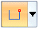
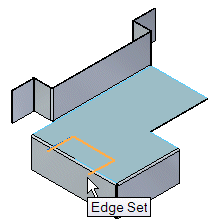
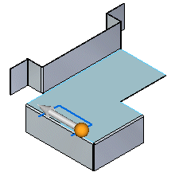
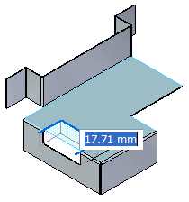
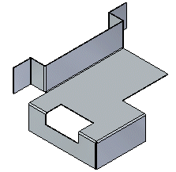

Construct a sheet metal cutout from an open profile
-
Choose Home tab→Sheet Metal group→Hole list→Cut .
-
On the Cut QuickBar, set the Profile option to Open

. -
Select the region(s) to define the cutout.

-
(Optional) Click the directional arrow to change the feature direction.

-
Type a value for the cutout extent or right-click for a dynamic preview of the cutout.

-
Change the settings to update the preview or right-click to place the cutout.
